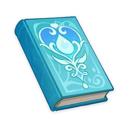

Mondstadt · Books & Literature
Heart of Clear Springs
This four-volume Springvale legend follows a boy and a spring fairy from their first meeting to a painful separation. Version 4.1’s Waterborne Poetry later identifies the fairy as Callirhoe and the boy as Old Finch.

A Springvale hunters’ legend
Heart of Clear Springs is a four-volume story whose item descriptions call it a legendary tale passed down by Springvale hunters. No author or compiler is named. The volumes trace a spring fairy’s meeting with a human boy, their friendship, and a separation shaped by their very different lifespans.
That framing matters: the collection is presented as a local telling, not as a neutral chronicle. Later, the Version 4.1 Waterborne Poetry event connects its central pair to named characters, giving the legend a personal basis without establishing that every scene or image is a verbatim record.
Volume I: a wish at the spring
The first volume introduces a nameless, tearful boy who comes to a moonlit spring and a fairy who has settled there from afar. She has little power and has lost much of her wisdom. The boy asks whether she can grant his wish; unable to speak, she nods, while neither character understands the other’s hopes very well.
The narrator describes spring fairies in mythic terms as beings born from water and related to angels. That is how this in-world tale explains them; the passage does not by itself define the nature of every Oceanid or establish a complete taxonomy of supernatural beings.
Volume III: promises across unequal lives
When the wind stills and the moon’s reflection becomes whole, the boy hears the fairy speak. The volume describes how he is moved by her voice. She accepts that she will someday have to leave, while he vows to remain at the spring forever.
The promises already point in different directions: the boy measures his life as a human, while the fairy expects to outlive him. The volume presents their bond tenderly, but does not resolve how either character understands the cost of that difference.
Volume IV: the tale’s separation
The boy grows up, makes friends, and has new experiences, while the fairy remains unchanged. Eventually she leaves without another conversation. He wonders whether she was only a childhood fantasy, but continues to believe that their encounters were real.
The book ends with a legend that rain falling into the pool mixes with the fairy’s tears. Its narrator calls this a groundless superstition believed by the boy until his death. It is part of the folk tale’s emotional ending, not a confirmed explanation for Springvale’s rain.
Waterborne Poetry identifies the pair
In Heart of the Deep, Callirhoe says that the spring fairy in the book is her and that the boy is Finch. She recounts meeting him when she was weakened after reaching Mondstadt, learning about human feelings through their conversations, and fleeing when she realized his feelings had become romantic. She feared that the difference between Lochfolk and human lives would eventually bring him regret.
After decades apart, Callirhoe decides to see Finch again. Their reunion is real, but she can only keep a physical form briefly. She gives him a droplet of water made from her power and promises that they will remain connected through the spring and meet in dreams. This later scene changes the legend’s apparent finality without removing the limits that caused their separation.
What the sources establish
The four volume descriptions establish the collection’s Springvale hunters’ tradition, its fairy-and-boy plot, and its tragic separation. The Version 4.1 quest identifies the pair as Callirhoe and Finch and adds the reunion that the book’s ending does not show. The quest is the source for their names and later meeting; the book remains the source for its own folk-tale version.
Neither source names the person who compiled or published the four-volume collection. The fairy’s story uses mythic language, while Callirhoe’s quest dialogue identifies her as an Oceanid and Lochfolk. Keep those forms of evidence distinct, and do not turn the rain legend or the tale’s angel imagery into broader established history.
This is an original CoreGG reading guide, not an official HoYoverse article or a reproduction of the game text. Source links below identify the records used so you can check the original context.
Sources & references
Check these sources for the original game text and reference trail.